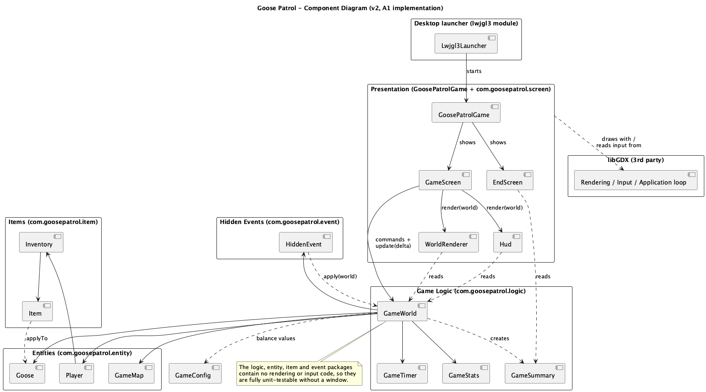
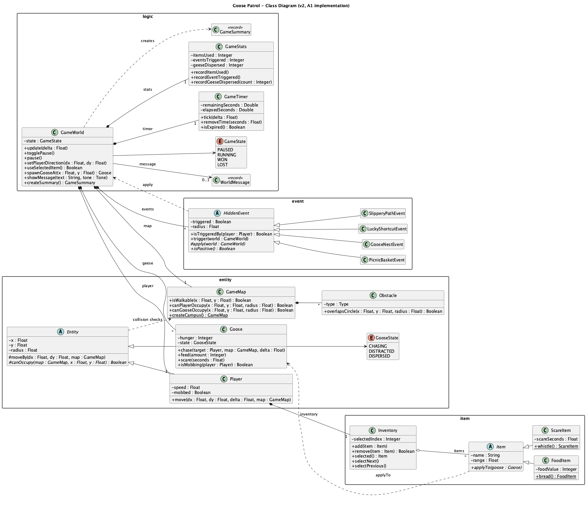
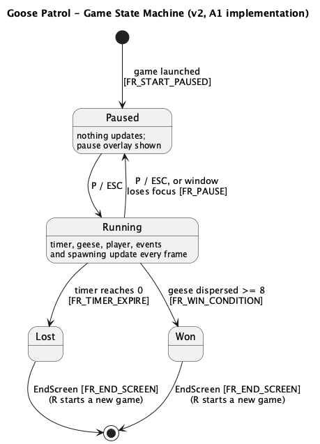
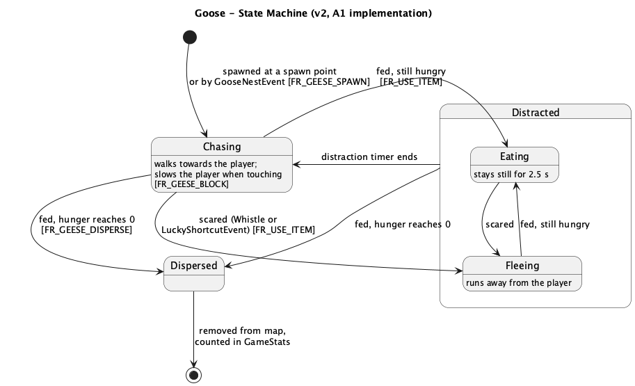
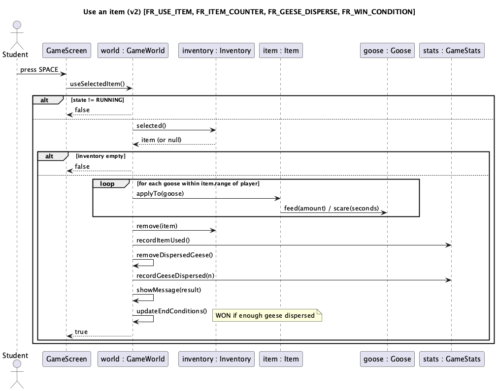
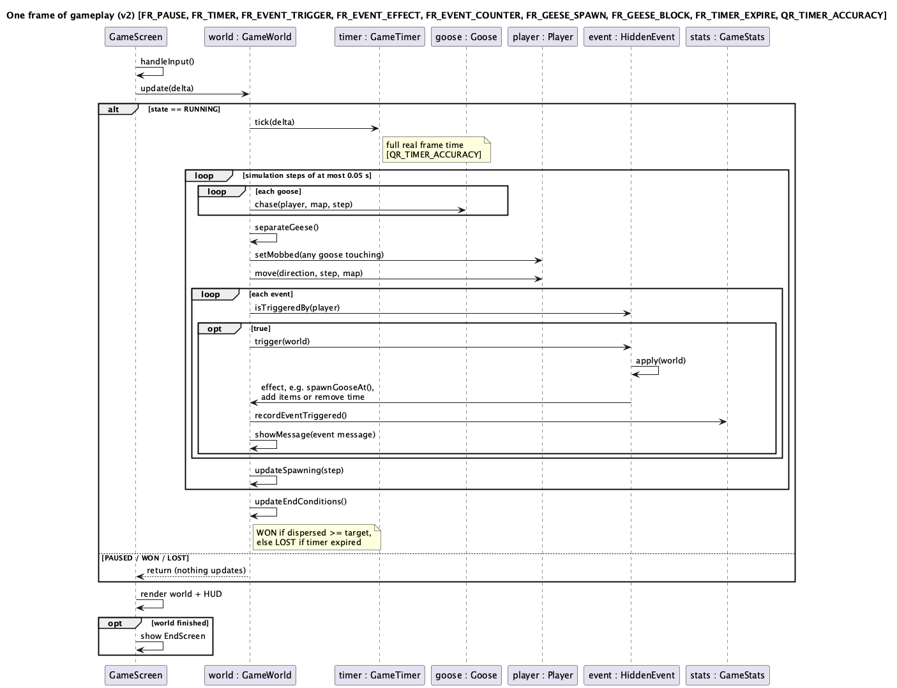

We describe the system using four complementary views from UML 2.5 [1], following Kruchten's multi-view model [2] so that package dependencies and runtime behaviour are separated clearly without cluttering one giant diagram:
dot), outputting PNGs and SVGs committed in Git (architecture/v1/, architecture/v2/). Text files give clear line-by-line diffs in pull requests, keep class names aligned with the Java code, and are easy for the Assessment 2 team to update. We considered Draw.io / Lucidchart (rejected due to manual box layout and messy XML merge conflicts across a 7-person team) and desktop CASE tools like StarUML / Modelio (rejected due to heavy project files for a 6-week project).
Following Sommerville's layered architecture pattern [3], dependencies point strictly downwards across three layers:
com.goosepatrol.lwjgl3): Lwjgl3Launcher and StartupHelper set up the 1280×720 desktop window and JVM startup flags (CR_JAVA, CR_EXECUTABLE) and launch GoosePatrolGame; no game rules sit in the desktop module.GoosePatrolGame, com.goosepatrol.screen): GoosePatrolGame owns the shared libGDX rendering objects (ShapeRenderer, SpriteBatch, BitmapFont) and switches between GameScreen and EndScreen. Drawing is split between WorldRenderer (2D top-down campus grass, walkways, buildings, lake, player, geese and triggered event markers; CR_2D_TOPDOWN) and Hud (countdown timer, counters, inventory bar, feedback banner and start/pause card).logic, entity, item, event + GameConfig): Has no imports from com.badlogic.gdx.graphics or Gdx.input. GameScreen turns keyboard input into method calls on GameWorld, while the renderers only read state. This separation lets 88 JUnit 5 tests (99.4% line coverage across the four domain packages) run quickly in CI on Linux, Windows and macOS without a GPU or window, and keeps future Assessment 2 sprite or UI changes confined to screen/.Screen.render() (as in our early prototype on main) is fast to write at first, but ties game logic to OpenGL and blocks unit testing. (2) A full Entity-Component-System (libGDX Ashley) was rejected because Goose Patrol has only a few entity types (one Player, up to nine Goose objects and static Obstacles), where standard Java inheritance is much easier for the Assessment 2 team to read and extend.
logic (Facade): GameWorld owns the Player, active Goose list, HiddenEvent list, GameMap, GameTimer and GameStats behind a small set of command and getter methods. When a game finishes, createSummary() returns an immutable Java <<record>> (GameSummary) so EndScreen can display results without holding a reference to the live GameWorld; WorldMessage stores short feedback text and its display tone.entity (Shared Collision and Template Method): Abstract Entity handles axis-separated wall-sliding movement in moveBy(dx, dy, map) and delegates terrain checks to abstract canOccupy(map, x, y) [4]. Player calls GameMap.canPlayerOccupy (blocked by map edges, BUILDING and WATER), while Goose calls canGooseOccupy (blocked by edges and buildings, allowed across the campus lake). Passing GameMap as a parameter avoids circular references between entities and the map.item (Polymorphic Strategy): Abstract Item stores name, description and effect range, and declares abstract applyTo(Goose) [4]. GameWorld.useSelectedItem() finds geese within range, calls item.applyTo(goose) polymorphically, removes the used item from Inventory and updates GameStats. Adding new Assessment 2 items only requires a new Item subclass (QR_EXTENSIBILITY).event (Template Method One-Shot Rule): Abstract HiddenEvent provides concrete trigger(GameWorld), which sets triggered = true before calling protected abstract apply(GameWorld) [4]. The "fires at most once" rule (FR_EVENT_EFFECT) is therefore handled in one base class rather than repeated in PicnicBasketEvent, GooseNestEvent, LuckyShortcutEvent and SlipperyPathEvent.GameScreen, WorldRenderer, Hud, EndScreen) and constants in GameConfig are shown at component level in Diagram 1 and left out of Diagram 2 to keep the domain diagram readable. Simple getters and constructors are omitted; Java 17 records use the <<record>> stereotype.
GameWorld and GoosePatrolGame.GameWorld starts in PAUSED with started = false (FR_START_PAUSED), showing the rules and controls card (QR_LEARNABILITY). Pressing ENTER, P or ESC moves to RUNNING; pressing P/ESC during play or losing window focus (GameScreen.pause()) switches back to PAUSED, where GameWorld.update() returns immediately so the timer, geese and player stop on the same frame (FR_PAUSE, QR_PAUSE_RESPONSE). Reaching geeseDispersed ≥ 8 enters WON (FR_WIN_CONDITION), while timer.isExpired() enters LOST (FR_TIMER_EXPIRE); both pass a GameSummary to EndScreen (FR_END_SCREEN), where R or ENTER starts a fresh session.
CHASING with hunger ∈ {1, 2}, walking towards the player and slowing them via Player.setMobbed(true) on contact (FR_GEESE_SPAWN, FR_GEESE_BLOCK). Feeding a goose with FoodItem reduces hunger: if hunger == 0, it enters DISPERSED and is removed and counted by GameWorld (FR_GEESE_DISPERSE); if still hungry, it enters composite state Distracted in sub-state Eating (standing still). Scaring a goose with ScareItem or LuckyShortcutEvent enters Distracted in sub-state Fleeing (running away from the player). In code, Distracted { Eating, Fleeing } is stored as GooseState.DISTRACTED plus boolean fleeing because both share the same countdown timer back to CHASING.
When GameScreen reads SPACE while RUNNING, GameWorld.useSelectedItem() fetches Inventory.selected(), applies it to every goose within item.getRange() (FR_USE_ITEM), removes the item from the inventory, increments GameStats.recordItemUsed() (FR_ITEM_COUNTER) even if no geese were in range (distinguishing effective vs wasted uses for Assessment 2's FR_SCORE_ITEMS), removes any DISPERSED geese, and shows a feedback message.

Diagram 6 shows how GameWorld.update(delta) handles slow frames cleanly: GameTimer.tick(delta) uses double-precision real frame time so 5-minute countdown drift stays well below 1 s (QR_TIMER_ACCURACY), while movement, wall sliding, hidden-event checks and spawning run in sub-steps of at most 0.05 s. That way, a lag spike cannot make the player step straight through a building wall or skip over a hidden event (FR_MAP_BOUNDS, FR_EVENT_TRIGGER).
v1 → v2)All six v1 diagrams, the full 14-item change log and our Week 3 CRC cards are hosted on the team website:
v1): https://soham-apte.github.io/Eng1_Project_Team8/architecture.html#v1v1 → v2 change table: https://soham-apte.github.io/Eng1_Project_Team8/architecture.html#evolutionReq1, we drafted Class-Responsibility-Collaborator (CRC) cards [5] to separate libGDX screen code from pure game logic so rules could be tested in JUnit.v1 (Week 4): Before building the screens, we committed six PlantUML v1 diagrams (commit 91a6bc0) setting out the packages (logic, entity, item, event), main classes and state machines.main (commit 88ede63) and the layered com.goosepatrol version on feature/a1-implementation. We compared them side-by-side on a review branch (review/side-by-side) for testability, requirement coverage and structure, keeping the layered design while bringing across the flat prototype's two extra hidden events (LuckyShortcutEvent, SlipperyPathEvent) as HiddenEvent subclasses.v2 (Week 6): We updated the PlantUML diagrams to v2 alongside code review and cross-checked every requirement in traceability.html.v1 to v2 and reasons| Area | Initial v1 design | Updated v2 design and reason |
|---|---|---|
| Screen responsibilities | Single GameScreen handled input and drew the map, entities and HUD; no top-level Game class shown. |
Added GoosePatrolGame to manage screens and split drawing into WorldRenderer and Hud so each class has one clear job. |
| Movement and obstacles | Point-based Entity with no radius; GameMap had outer bounds only and no obstacle types. |
Added circle radius, shared Entity.moveBy wall-sliding and per-subclass canOccupy over Obstacle(BUILDING, WATER) so geese can cross the lake while the player cannot (FR_MAP_BOUNDS, FR_CAMPUS_THEME). |
| Goose distraction and winning | Single generic Distracted state; win condition and dispersal left as A2 notes. |
Split Distracted into stationary Eating vs fleeing Fleeing, and implemented DISPERSED + GEESE_TO_DISPERSE_FOR_WIN in A1 so players can actually win a session. |
| One-shot hidden events | Placeholder BonusTimeEvent / GooseSwarmEvent; subclasses tracked their own trigger flags. |
Moved the single-trigger check into HiddenEvent.trigger() → apply(). Adding LuckyShortcutEvent and SlipperyPathEvent from the base prototype needed no changes to existing event or item classes (QR_EXTENSIBILITY). |
| End screen and frame timing | EndScreen read from live GameWorld; single-step update(delta) could drift or skip collisions on slow frames. |
Added GameSummary record, double-precision GameTimer (QR_TIMER_ACCURACY), 0.05 s movement sub-steps, and GameConfig constants. |
Matching names connect Req1.pdf, Diagrams 1–6, Java classes and JUnit tests (full matrix at traceability.html):
| Req1 IDs | Diagrams | Classes and methods |
|---|---|---|
FR_PLAYER_MOVE, FR_MAP_BOUNDS, FR_CAMPUS_THEME | 1, 2, 6 | GameScreen.handleInput → GameWorld.setPlayerDirection → Player.move, Entity.moveBy, GameMap.createCampus, Obstacle; drawn by WorldRenderer. |
FR_GEESE_SPAWN, FR_GEESE_BLOCK, FR_GEESE_DISPERSE | 2, 4, 5, 6 | GameWorld.updateSpawning, Goose (chase, feed, scare, isMobbing), GooseState, Player.setMobbed, GameWorld.removeDispersedGeese. |
FR_INITIAL_INVENTORY, FR_USE_ITEM, FR_INVENTORY_DISPLAY | 1, 2, 4, 5 | Inventory, abstract Item, FoodItem.bread, ScareItem.whistle, GameWorld.useSelectedItem; inventory bar drawn in Hud. |
FR_EVENT_HIDDEN, FR_EVENT_COUNT, FR_EVENT_TRIGGER, FR_EVENT_EFFECT | 1, 2, 6 | Abstract HiddenEvent (isTriggeredBy, trigger, apply) + 4 subclasses; WorldRenderer.drawTriggeredEvents only draws triggered events. |
FR_TIMER, FR_TIMER_EXPIRE, FR_START_PAUSED, FR_PAUSE | 1, 2, 3, 6 | GameTimer, GameState, GameWorld.togglePause / pause / updateEndConditions, GameScreen.pause, Hud start/pause card. |
FR_ITEM_COUNTER, FR_EVENT_COUNTER, FR_WIN_CONDITION, FR_END_SCREEN | 1, 2, 3, 5, 6 | GameStats, Hud.drawTopBar, GameSummary record, GoosePatrolGame.showEndScreen, EndScreen. |
QR_FRAME_RATE, QR_INPUT_RESPONSE, QR_TIMER_ACCURACY, QR_PAUSE_RESPONSE | 1, 3, 6 | Simple 2D shape/font rendering in WorldRenderer and Hud; per-frame key polling in GameScreen; double timer + 0.05 s sub-stepping in GameWorld. |
QR_STABILITY, QR_EXTENSIBILITY, QR_LEARNABILITY, QR_MAP_CLARITY, QR_BALANCE | 1, 2, 3 | Headless-testable logic (HeadlessGameSessionTest); extensible Item/HiddenEvent base classes; controls card in Hud; labelled campus obstacles; GameConfig. |
CR_JAVA, CR_EXECUTABLE, CR_SINGLE_PLAYER, CR_2D_TOPDOWN, CR_LICENCES | 1, 2 | Lwjgl3Launcher + Java 17 standalone JAR; single Player; top-down FitViewport in GameScreen/WorldRenderer; permissive/replaceable libraries + bundled notices. |
| Remaining A2 requirements | How the v2 design supports them |
|---|---|
FR_PICKUP_PLACEMENT, FR_PICKUP_COLLECT, FR_INITIAL_INVENTORY (≥5 items) | Add 3+ new Item subclasses; store map pickups in GameWorld and call Inventory.add(Item) when the player walks over one. |
FR_EVENT_COUNT (≥5 events) | Add at least one more HiddenEvent subclass implementing apply(GameWorld) and register it in GameWorld.createDefault with no edits to existing events. |
FR_GEESE_VARIETY | Pass size, speed and starting hunger parameters into Goose (or add factory methods) while keeping Entity.moveBy and GooseState unchanged. |
FR_SCORE_BASE, FR_SCORE_ITEMS, FR_SCORE_EVENTS, QR_SCORE_TRANSPARENCY | GameWorld.useSelectedItem already distinguishes effective vs wasted items and GameTimer records elapsed play time; add score fields to GameStats and GameSummary and display the breakdown on EndScreen. |